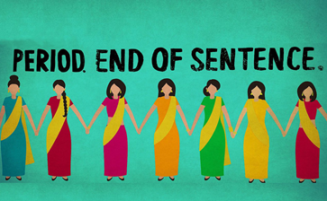

 Informações sobre o Filme: Tempo de Duração: 26 Minutos País: Estados Unidos Idioma: Híndi Lançamento: 2018 Gênero: Documentário Classificação: 10+ Estreia no Brasil: 2019 Título Original: Period. End of Sentence Direção: Rayka Zehtabchi
Resenha Crítica
Por definição do dicionário, tabu é um escrúpulo aparentemente injustificado, sem fundamento ou imotivado, interdição cultural e/ou religiosa quanto a determinado uso, comportamento, gesto ou linguagem. Nas diversas sociedades e culturas existentes, há muitos tabus que existem durante muito tempo, até porque, não é tão fácil mudar costumes repentinamente.
Na civilização indígena, um grande tabu existente é sobre a menstruação e no documentário, Absorvendo o tabu, demonstra as dificuldades enfrentadas pelas mulheres por conta desse costume. Ao gravar, a repórter faz perguntas a diversos homens sobre o que é a menstruação, muitos deles alegam não saber, outros dizem que é uma doença que atinge principalmente as mulheres.
Na Índia, falar sobre a menstruação não é algo costumeiro, as mulheres se tornam “impuras” no período menstrual, sendo privadas de algumas atividades como entrar nos templos, fazer orações, dentre outras atividades. Por ser muito caro, o absorvente é utilizado por menos de 10% das mulheres, sendo que muitas não sabem nem o que é. Elas costumam usar panos quando estão menstruadas e como relatou uma delas, foi necessário que ela abandonasse os estudos, pois, seu fluxo menstrual era forte e exigia a troca constante de panos, porém além dela sentir vergonha de fazer isso, alguns homens ficavam olhando-a fazer.
Esses fatos, em outros países, seriam chocantes, visto que há uma maior inserção das mulheres na sociedade, no entanto, mesmo essas sendo presentes e participativas, ainda sofrem com desigualdades de gêneros e críticas, acarretaras por uma cultura patriarcal e machista que perdurou por séculos.
O documentário demonstra a trajetória de uma fábrica de absorventes de baixo custo que são produzidos por mulheres, outro ato que não costuma ser comum, pois a maioria delas não trabalham. Quando elas começam a ter lucro nas vendas, muitas se alegram pelo fato de conseguirem ser mais independentes e possuir dinheiro no bolso, por conseguir dar presentes aos seus irmãos, ato que não acontecia antes. A indiana, Sneha, funcionária da fábrica de absorventes, diz no documentário que seu sonho era ser policial para acabar com os rapazes que mexessem com ela e, a partir do seu trabalho, conseguiu financiar seus estudos.
Apesar de haver muita luta por parte das mulheres para conseguirem se inserir na sociedade e ter direitos, ainda há lugares como a Índia que a cultura patriarcal continua a mesma. Elas são ensinadas desde pequenas para serem uma boa esposa e mãe, não sendo necessário, por exemplo, trabalhar. Uma das mulheres que trabalham na fábrica, abre um parêntese para o nome da marca: Fly, pois, de acordo com ela, esse nome era porque as mulheres, não só mereciam como deveriam voar.
Fazendo uma ponte entre o passado e presente, essas mulheres que estão quebrando padrões usando absorventes, construindo fábricas e se tornando independentes, seriam as revolucionárias que foram marco importante para o movimento feminino ganhar forçar e se fazer presente atualmente.
Temas Propostos
Tabus ainda enfrentados pela mulher no século XXI: